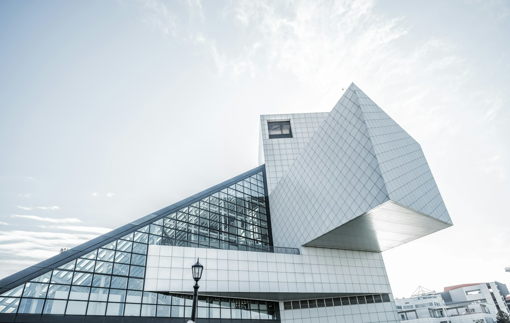

n
NEO
配色工作台
neo.abc.sd
导出色板
COLOR STUDIO
配色工作台
图片取色
我的色板
0
花园午后
颜色
3
4
5
6
7
8
上传图片
提取中
花园午后
Unsplash
当前色板
照片采样
04 / COLLECTION
花园午后
海岸假日

城市几何
山野之间
对比度检查
WCAG 2.2
文字
背景
15.0
: 1
Aa
好的颜色，清晰可读。
Good color. Clear words.
普通文字
AAA
大号文字
AAA
我的色板
0 组
暂无收藏
图片取色
导出色板
色板名称
PNG
图片色卡
CSS
颜色变量
JSON
配色数据
删除这组色板？
取消
删除